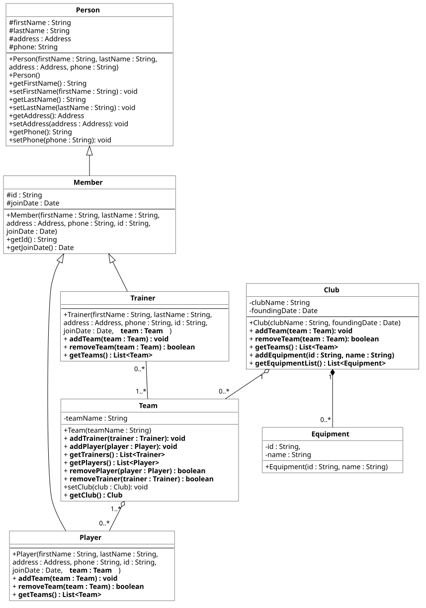

Praktikum 4: Listen und Implementierung von Objektbeziehungen II
In diesem Praktikum wollen wir die Umsetzung von Objektbeziehungen in Java weiter vertiefen.
🚀 Lernziele
Sie können:
- Kompositionen korrekt implementieren
- Prüfungen von Multiplizitäten umsetzen
- Die Datenstruktur Liste zielführend einsetzen
🤔 Vorbereitung
Bitte bearbeiten Sie die folgenden Aufgaben vor Ihrem Praktikumstermin. Diese sollen sicherstellen, dass Sie die gestellten Praktikumsaufgaben inhaltlich und zeitlich schaffen.
Aufgaben:
- Listen: Bitte lesen Sie noch einmal, wie diese in Java genutzt werden (siehe Vorlesung 4).
- Kompositionen: Schauen Sie sich noch einmal genau an, wie Kompositionen in Java umgesetzt werden. Schauen Sie sich dazu bitte auch nochmal das Beispiel aus der Vorlesung an: Vorlesung 3 #13
- Liste implementieren: Implementieren Sie im folgenden IDE-Fenster eine Funktion, die eine Liste mit Zufallszahlen in einem festgelegten Wertebereich anlegt. Die Größe der Liste soll parametrisierbar (=einstellbar) sein. Geben Sie anschließend die Liste mit einer foreach-Schleife aus.
📝 Pflichtaufgaben (1 Bonuspunkt)

1 - Weiterentwicklung vom Verein-Modell
In dieser Aufgabe werden wir unser Modell vom Verein noch weiter entwickeln. Dafür ist Ihnen ein aktualisiertes UML-Klassendiagramm gegeben. Die Änderungen sind bewusst hervorgehoben. Es ist zu empfehlen, Ihre Lösung aus dem vorgehenden Praktikum hier zu laden und diese dann zu editieren. Bearbeiten Sie bitte folgende Teilaufgaben.
Aufgaben:
- Neue Klasse Equipment: Erstellen Sie eine neue Klasse Equipment. Schauen Sie sich genau an, wie diese in Verbindung zum Club steht. Setzen Sie das entsprechend um.
- Listen anstelle von Arrays: Für den Produktiveinsatz unserer Software sind dynamische Datenstrukturen von hoher Bedeutung. Ersetzen Sie bitte Arrays durch Listen in Ihrer aktuellen Implementierung. Aufgrund der erhöhten Flexibilität von Listen erwarten nun auch einige Methoden einzelne Objekte anstelle von kompletten Arrays. Prüfen Sie das Klassendiagramm gründlich dahingehend.
- add- und remove-Methoden: Unser bisheriges Modell unterstützte noch keine dynamischen Anpassungen. Wir mussten immer Arrays extern instanziieren und in bspw. Club, Teams diese vollständig ersetzen. Das ist dank Listen nun flexibler. Setzen Sie bitte sowohl add()- als auch remove()-Methoden in den jeweiligen Fachklassen mit Container-Datenstrukturen (=Listen) um.
-
Anpassungen für 1..*-Beziehungen: Bisher haben
wir 1..*-Beziehungen noch nicht streng umgesetzt. Das aktuelle Modell sieht nun entsprechende
Anpassungen in den Konstruktoren vor. Denken Sie auch daran, dass diese Bedingung nicht durch
das Entfernen von Beziehungen (remove) verletzt werden darf.
Hinweis: Sie sollten im Konstruktor prüfen, ob notwendige Parameter (z.B. Team) übergeben
und nicht null sind. In diesem Fall können Sie im Konstruktor mittels
throw new Exception()das (ungültige) Anlegen des Objekts verhindern. - Testobjekte anlegen: Erzeugen Sie bitte selbstständig in der Main.java Testobjekte. Legen Sie einen Club, zwei Teams, einen Trainer (für beide Teams), je Team zwei Player zum Testen an. Prüfen Sie bitte auch, ob bspw. Ihre 1..*-Beziehungen korrekt erhalten werden (durch Entfernen von Player usw.).
Laden Sie bitte Ihr Modell vom vorhergehenden Praktikum und bearbeiten Sie es hier weiter.
⭐ Zusatzaufgaben (1 Bonuspunkt)
2 - Ausbaupotenziale des Verein-Modells
Wir haben nun ein kleines Modell eines Sportvereins implementiert. Überlegen Sie sich bitte selbstständig, welche Potenziale es noch gibt. Sehen Sie noch Probleme? Wenn ja, wie ließen sich diese ggf. beheben. Seien Sie hier gern kreativ!
Diese Aufgabe ist bewusst etwas offener gestaltet. Es wird aber erwartet dass Sie mindestens einen der folgende Punkte umfassend vorbereiten und auch auch erklären/diskutieren können:
- Beziehungstypen: Sind diese aus Ihrer Sicht alle gut modelliert bzw. umgesetzt? Nehmen Sie gern ein konkretes Beispiel und setzen Sie dieses in Java um. Notwendige Änderungen am Diagramm können Sie gern auszugsweise handschriftlich ergänzen. Sie brauchen nicht das gesamte Diagramm aktualisieren.
- Weitere Fachklassen: Könnten Teile der aktuellen Klassen ausgelagert/zusammengefasst werden oder weitere Beziehungen ergänzt werden? Fehlt Ihnen zur Modellierung eines Sportvereins etwas Wichtiges? Wenn ja, erstellen Sie bitte auch ein erstes Konzept und bringen Sie erste Implementierungen mit.
Ergänzen Sie Ihre Ideen gern hier (Speichern und Laden der vorhergehenden Aufgabe) oder fügen Sie es direkt im vorhergehenden IDE-Fenster hinzu.
3 - unique-Methode für Listen
Hinweis: Diese Aufgabe ist unabhängig von UML-Klassendiagrammen und dem vorgestellten Modell.
Es soll eine Funktion equal implementiert werden, die eine Integer-Liste übergeben bekommt, die potenziell Duplikate (=gleiche Zahl mehrmals) enthalten kann. Beachten Sie dabei die folgenden Anforderungen.
Anforderungen:- Übergabe- und Rückgabeparameter: Es soll eine Integer-Liste übergeben und auch wieder zurückgegeben werden.
- Duplikate filtern: Elemente (=Zahlen), die mehrfach vorkommen, sollen herausgefiltert werden. Zurückgegeben werden sollen die Elemente nur einmal, auch wenn diese in der übergebenen Liste mehrfach vorkommen.
Beispielaufruf: equal([1, 4, 2, 4, 3, 1, 4, 5, 6, 2]) ➡️ [1, 4, 2, 3, 5, 6] (Hinweis: Es handelt sich um eine exemplarische Liste, kein Array)